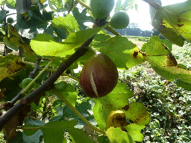
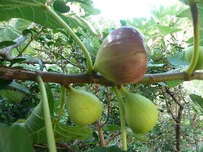
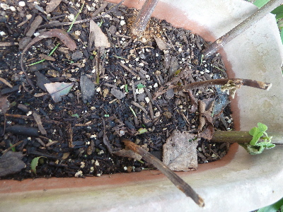
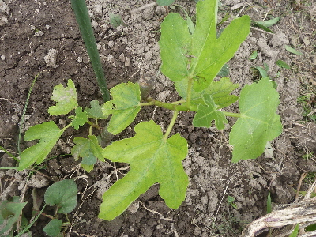
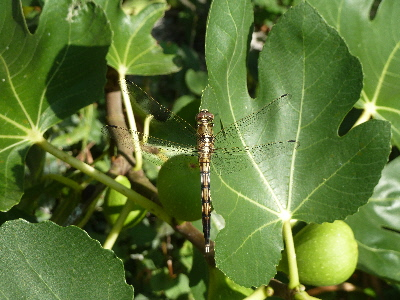
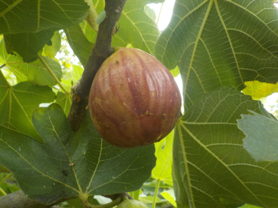
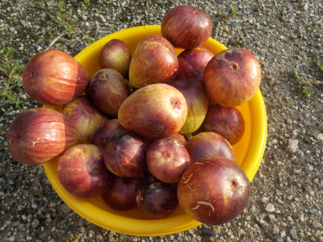
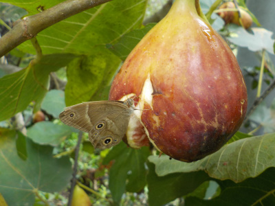
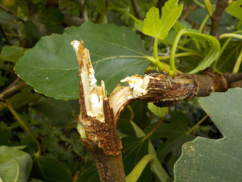
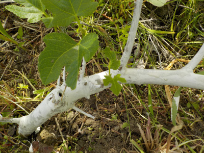

更新日 : 2015/09/27

収獲時期ですね。
美味しかったです。
更新日 : 2017/09/03

今くらいが一番イチジクが熟れる時期かな。
熟れたのから食べています。

夏にイチジクを挿し木したんですが、失敗したようです。
みんな枯れてしまいました。なんでだろう。
時期が悪かったかな。次は冬に挑戦しようと思います。
更新日 : 2018/05/26

植え替えしてて思ったんでしが、根っこはあまり張らないんですね。
これで大丈夫？ってくらい少なかったです。
ほっといたら枯れそうなので、しばらくはまめに水やりをしようと思います。
更新日 : 2018/07/28

周りに餌が沢山あるのかな。
このイチジクの木はあまり剪定していないので大きいです。3mあるかな？
収穫が終わったらバッサリ切って小さくしたいです。
更新日 : 2019/08/31

ちょっと前からイチジクを収穫しています。
今のところ、ちょっとずつ熟れてるので食べやすいです。
一度に沢山出来ないのはいいことだ。
更新日 : 2019/09/14

ちょっと前までは少しずつだったんですが、今日は大量に収穫しました。
まだ熟れていないのや、小さいものもあるので食べるのに困るほどの量ではないです。
毎日コツコツ食べようと思います。
更新日 : 2019/09/23

たぶん蛾も好きなんでしょう。

台風で枝が折れました。
イチジクの木って弱いですね。
更新日 : 2020/05/02

テッポウムシ対策で殺虫剤を塗りました。
これが役に立つといいですね。
正直、殺虫剤使っているので食べるのが心配。あまり増やさない方がいいかな。
【おいしいものを食べよう。】【たくさん寝よう。】
【ソロ活をしよう!】【季節感のあることをしよう。】【動画視聴はほどほどに。】【当サイトの全てのコンテンツは無断転載禁止です。】